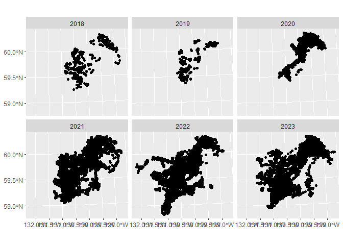
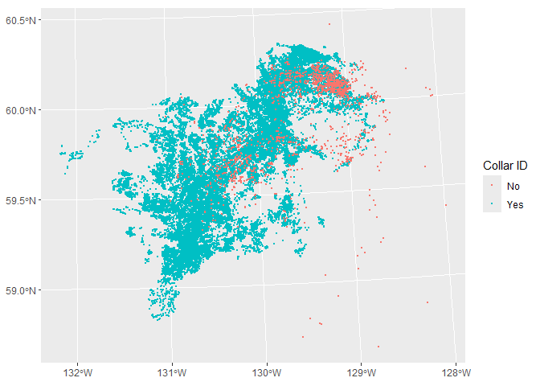
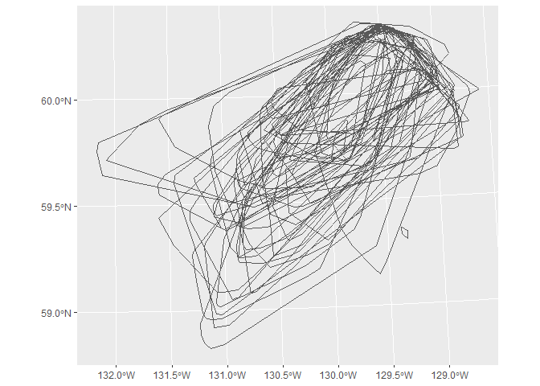
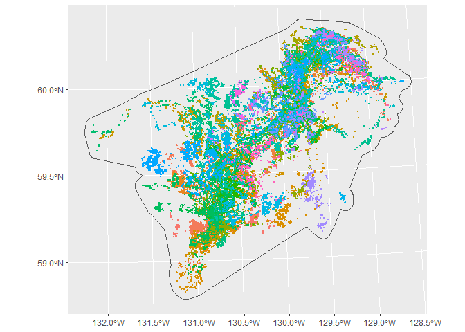

1. Prepare caribou data
The first step of the analysis is to explore the Little Rancheria telemetry data and generate some minimum convex polygons (MCPs). Our objectives are to:
- Read Little Rancheria telemetry data
- Summarize number of collars, years, and locations
- Select subset of data for further analysis i.e., drop older locations without IDs
- Plot the distribution of locations by year for subset of data
- Map the distribution of locations by Collar ID
- Create 100 MCP for all locations and buffer by 5km
Install and load required packages
library(sf)
library(tidyverse)
library(adehabitatHR)Preparing telemetry data
Read telemetry data from CSV file
We start by reading the telemetry data from the csv file and converting it to a simple feature point file. To do this we read the GPS locations, convert them to an sf object, create long/lat coordinates, and project to the standard Yukon Albers projection (EPSG:3578). We also created a new field called year to allow us to filter observations by year. A number of older locations are not associated with a Collar_ID. We will exclude them for now. Finally, we save the gps coordinates in a geopackage file.
gps_all <- read_csv('data/Telemetry_LittleRancheria.csv') |>
st_as_sf(coords=c('Longitude', 'Latitude'), crs=4326) |>
mutate(...1=NULL, Year=substr(Fix_Date,1,4)) |>
st_transform(3578)
st_write(gps_all, 'data/caribou_ranges.gpkg', 'gps_master', delete_layer=TRUE)Deleting layer `gps_master' using driver `GPKG'
Writing layer `gps_master' to data source
`data/caribou_ranges.gpkg' using driver `GPKG'
Writing 114316 features with 12 fields and geometry type Point.gps_na <- filter(gps_all, is.na(Collar_ID))
st_write(gps_na, 'data/caribou_ranges.gpkg', 'gps_without_id', delete_layer=TRUE)Deleting layer `gps_without_id' using driver `GPKG'
Writing layer `gps_without_id' to data source
`data/caribou_ranges.gpkg' using driver `GPKG'
Writing 1433 features with 12 fields and geometry type Point.gps <- filter(gps_all, !is.na(Collar_ID))
st_write(gps, 'data/caribou_ranges.gpkg', 'gps_with_id', delete_layer=TRUE)Deleting layer `gps_with_id' using driver `GPKG'
Writing layer `gps_with_id' to data source
`data/caribou_ranges.gpkg' using driver `GPKG'
Writing 112883 features with 12 fields and geometry type Point.Locations by caribou by year
We start by viewing the number of locations by caribou and year. Caribou without a Collar_ID were monitored between 1996-2001. For now we will focus exclusively of caribou with a Collar_ID.
cat("With Collar_ID:\n")With Collar_ID:table(gps$Year) 2018 2019 2020 2021 2022 2023
786 348 5658 36210 42187 27694 cat("\nWithout Collar_ID:\n")Without Collar_ID:table(gps_na$Year)1996 1997 1998 1999 2000 2001
54 523 328 254 189 85 cat("\nLocations by year for caribou with Collar_ID:\n")Locations by year for caribou with Collar_ID:table(gps$Collar_ID, gps$Year) 2018 2019 2020 2021 2022 2023
43140 0 0 225 1450 1460 1373
43141 0 0 229 1455 1450 1376
43142 0 0 221 1438 1445 1138
43143 0 0 223 1463 1407 1136
43144 0 0 226 1459 1453 1143
43145 0 0 224 1459 1454 1368
43146 0 0 228 1461 1445 1359
43147 0 0 225 1459 1433 0
43148 0 0 226 1456 1389 0
43149 0 0 220 1458 1378 0
43150 0 0 224 1502 1365 0
43151 0 0 221 1454 1451 0
43152 0 0 225 1459 1454 1369
43154 0 0 223 1462 1447 1147
43155 0 0 219 1479 1388 0
43156 0 0 224 1483 1382 0
43157 0 0 217 1458 1448 1381
43158 0 0 226 1461 964 0
43159 0 0 223 1458 1446 1147
43160 0 0 223 1453 1453 1384
43161 0 0 188 1378 1140 0
43162 0 0 221 1450 1396 0
43163 0 0 217 1456 1451 1362
43164 0 0 228 1452 1462 1375
48401 0 0 0 0 754 858
48407 0 0 0 0 782 844
48412 0 0 0 0 756 989
48836 0 0 0 0 759 865
48837 0 0 0 0 772 985
48838 0 0 0 0 761 861
48840 0 0 0 0 849 1013
48841 0 0 0 0 753 842
48846 0 0 0 0 754 871
48847 0 0 0 0 762 832
86360 0 0 64 172 0 0
86362 0 0 62 461 502 251
86363 0 0 69 144 0 0
86365 0 0 70 470 422 425
101746 23 0 0 0 0 0
101747 27 0 0 0 0 0
101752 49 0 0 0 0 0
101753 38 0 0 0 0 0
101758 96 22 0 0 0 0
101759 17 0 0 0 0 0
101761 137 58 0 0 0 0
101762 49 0 0 0 0 0
101765 125 78 0 0 0 0
101766 92 108 67 0 0 0
101767 3 0 0 0 0 0
101768 44 0 0 0 0 0
101769 82 82 0 0 0 0
101792 4 0 0 0 0 0Locations by year
We can also see the distribution of all collar locations using the facet_wrap function of ggplot2. Based on the plot and the previous table we can see that there are a lot more locations between 2021-2023.
ggplot(data=gps) +
geom_sf() +
facet_wrap(facets=vars(Year))
View all gps locations
The following map shows the distribution of locations for caribou with and without a Collar ID.
gps_all <- mutate(gps_all, Collar_ID2=ifelse(is.na(Collar_ID), "No", "Yes"))
ggplot() +
geom_sf(data=gps_all, aes(color=as.factor(Collar_ID2)), size=0.50) +
scale_color_discrete(name="Collar ID")
Create minimum convex polygons
Create minimum convex polygons:
- for each caribou with greater than four locations
- for all caribous (dissolved) and add a 5km buffer
The second MCP will be used to define the study area.
mcp <- NULL
imcp <- NULL
for (i in unique(gps$Collar_ID)) {
#cat('Processing', i, '\n'); flush.console()
gps1 <- filter(gps, Collar_ID==i) %>%
dplyr::select(Collar_ID)
if (nrow(gps1)>=5) {
gps1.sp <- as_Spatial(gps1)
gps1.mcp <- mcp(gps1.sp, percent=100)
mcp1 <- st_as_sf(gps1.mcp)
if (i==gps$Collar_ID[1]) {
mcp <- mcp1
imcp <- mcp1
} else {
mcp <- st_union(mcp, mcp1)
imcp <- rbind(imcp, mcp1)
}
}
}
st_write(mcp, 'data/caribou_ranges.gpkg', 'mcp', delete_layer=TRUE)Deleting layer `mcp' using driver `GPKG'
Writing layer `mcp' to data source `data/caribou_ranges.gpkg' using driver `GPKG'
Writing 1 features with 100 fields and geometry type Multi Polygon.st_write(imcp, 'data/caribou_ranges.gpkg', 'imcp', delete_layer=TRUE)Deleting layer `imcp' using driver `GPKG'
Writing layer `imcp' to data source `data/caribou_ranges.gpkg' using driver `GPKG'
Writing 50 features with 2 fields and geometry type Polygon.mcp5k <- st_buffer(mcp, 5000) %>%
dplyr::select(id) %>%
mutate(id = 'MCP + 5k') %>%
st_transform(3578)
st_write(mcp5k, 'data/caribou_ranges.gpkg', 'mcp_buff5k', delete_layer=TRUE)Deleting layer `mcp_buff5k' using driver `GPKG'
Writing layer `mcp_buff5k' to data source
`data/caribou_ranges.gpkg' using driver `GPKG'
Writing 1 features with 1 fields and geometry type Polygon.Plot individual MCPs
Here we plot 100% minimum convex polygons (MCPs) for all caribou with Collar IDs.
ggplot() +
geom_sf(data=imcp, fill=NA)
Plot combined MCP + 5k buffer
ggplot() +
geom_sf(data=gps, aes(color=as.factor(Collar_ID)), size=0.50) +
geom_sf(data=mcp5k, fill=NA) +
scale_color_discrete(guide="none")